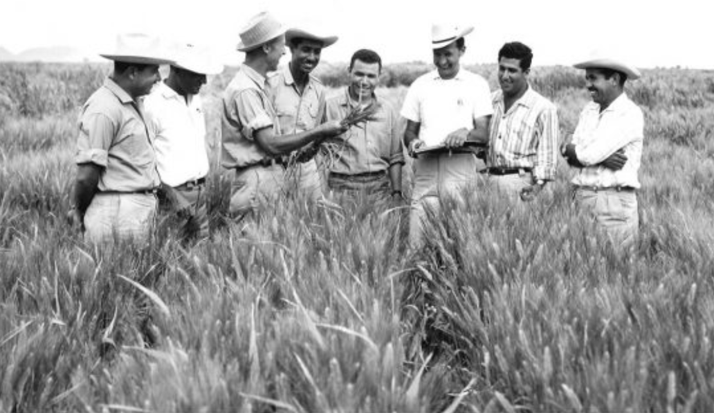

Dr. Norman Borlaug
The Man who saved a billon lives

Dr. Norman Borlaug,Third from the left,trains biologists in Mexico on how to increase Wheat yields, part of his life long war on hunger
Here's the Timeline of Dr. Norman Borlaug life:
- 1914. Norman Borlaug was born.
- 1937. Norman Borlaug got married.
- 1941
Norman got his Ph.D. in plant pathology.
- 1944
Norman Borlaug went to the Rockefeller Foundation so he could try to make Mexico’s agriculture better.
- 1945
Norman becomes the Director of the Cooperative Wheat Research and Production Program.
- 1953
He made a type of wheat that has a gene in it that shrinks the wheat plant.
- 1956
Mexico becomes independent on growing wheat that Norman created.
- 1961. Norman created semi-dwarf wheat that he gave to Mexico to try out.
- 1968
Because of Norman’s accomplishment in Pakistan, they have become independent in growing grain.
- 1970
Norman was given the Nobel Peace Prize for starting the Green Revolution.
- 1984. He was given the position of the Distinguished Professor of International Agriculture at Texas A & M University.
- 2004
He was awarded the National Medal of Science.
- 2007. Borlaug won the APS Award of Distinction.
"Borlaug's life and achievements are testimony to the far-reaching contribution that one man's towering intellect, persistence and scientific vision can make to human peace and progress."
-Indian Prime Minister Manmohan Singh
If you have time, you should read more about this incredible human being on his Wikipedia entry